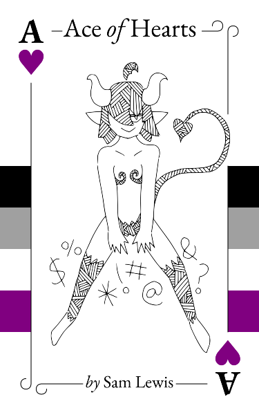

Ace of Hearts
by Sam Lewis
For all the horny aces out there
I
There was a presence at the end of my bed. I could feel it; the same one that’d been haunting me for weeks now. Night after night my dreams were interrupted and I would wake to the same sight. Tonight would be no exception. I opened my eyes—slowly—rubbed away the sleep and took a look. Sure enough, there she was, perched on the very end of my bed.
“You’re back,” I said.
There was movement behind her—the sweep of her tail—and a flash of fangs as she grinned.
“Course I’m back, Sukey-bitch. I’ve got a hunger that just won’t quit and you’re the only one in this damned city who can satisfy it.” Her voice took on a darker edge as she leaned in. “Now quit your whining and get to it. This succubus isn’t going anywhere until she gets hers.”
Succubus, a female demon, famous for having sex with sleeping men. They were supposed to be mythological beings, imaginary, confined to religious texts and whispered stories, not manifesting in my bedroom. This particular succubus didn’t care about what she was supposed to be or do, and she certainly didn’t care that I wasn’t a man. Nui, that was her name, didn’t care much for anything beyond satisfying herself . . . Well, I shouldn’t be so hasty, there were some things—
“Are you listening to me? Get your fucking head screwed on; I haven’t got all night,” she interrupted my train of thought.
“All right, all right,” I said as I slipped out from under the covers.
The night was cool, but even from the far end of the bed her unnatural body heat was already enough to warm me. I hooked my thumb into the waistband of my pyjama bottoms. Nui’s golden eyes lit up and she clambered down onto the mattress.
“So, how do you want to do this?” I asked.
She looked at me like I was speaking in tongues. “How? You still don’t get it, do you? I don’t fucking care how you do it, what you’re thinking about, or how many fingers you use. I just need the goddamned release. You’re a snack, a meal, food.”
“There’s more to it than that,” I shot back, “or you wouldn’t come to me, and only me, every night. There’s a reason I’m the only one.”
She put a hand to her forehead and sucked in an exasperated breath. “Fucking hell, did I ask for a therapy session? No way, cut the crap,” she said, waving me off. “Do the usual.”
The usual was unconventional, so far as I understood the typical behaviour of succubi, but it had become our little routine. I pushed down my pyjama bottoms, then kicked them off my feet and tossed them aside onto the floor. Meanwhile, Nui crept forward and planted her hands on either side of my body as she hovered over me. I felt the burning heat flowing from her naked body and the hot, urgent breath falling from her lips and onto my face.
I spread my legs.
“Now that’s what I call a good fucking start,” she hissed.
I laid my hand on my stomach as she settled into position above me. “You sure you don’t want me to touch you this time?” I asked.
Anger flashed on her face. “Shut the fuck up about that. You know I hate being touched.” She reached out with one hand to drag a clawed finger across my cheek. “Just focus on yourself. That’s all I need you for.”
“You want the lights on or off?”
“Don’t you dare turn them off,” she spat. “You look me in the goddamn eye so I can see you enjoying it.”
I nodded slowly as I moved my hand lower and began to touch myself, making certain to maintain eye contact with her. I saw her expression shift to something approximating anticipation.
“That’s it,” she whispered. “Nice and slow, and don’t even think about looking away.”
It truly wasn’t difficult to keep my eyes on Nui. She was beautiful, even cute, despite her demonic features. I saw black horns breaking free of matted black hair that hung over her golden eyes as she watched my face, and dark patterns and swirls on her bare skin which shifted colours and danced along with the motion of her long black tail in a telltale sign that she was enjoying what she saw.
“You’re so goddamn perfect, Sukey. Tasty little morsel.”
With a single finger, she traced a sharp line down my body, gently tugging at the collar of my shirt and probing at areas of bare skin. I felt a pleasant tingling on my skin wherever she touched me—on my neck, on my shoulder, on my stomach—an electric sensation in her wake that brought my skin to life and raised goosebumps. My own fingers played across my sex, already driving me forward to that inevitable release.
“You . . . like me,” I said between breaths.
Her response was immediate and precisely what I was after. “What the fuck? Don’t go all goopy on me now.”
She pinched me roughly on the side and I yelped.
“Fuck off with that touchy-feely bullshit,” she added.
I smiled, and she saw me smiling and sneered back. I enjoyed playing this, our little game. Teasing her, pushing her. I knew she enjoyed it too, though she didn’t like to admit it. I think it made things more interesting for her; it made her feel more powerful when she could put me in my place—beneath her, pinned to the bed . . .
“Are you wet for me?” she asked.
I nodded.
“Good girl.”
She lowered herself towards me and I saw her nose twitching. I could tell that she was smelling me. I never wore perfume for her, and I showered in the morning instead of in the evening; she liked me better this way, when she could smell the day on me. She smelled faintly of ash, like the remains of a campfire. It was the smell of wood smoke, a smell I’d come to associate with pleasure.
I felt her tail brush against my right ankle, gently at first. It was a black snake, coiled and powerful, teasing. A weapon, if she ever needed one, and a source of connection, if she desired it. I knew what she could do with her tail, and it made my heart race.
She grabbed my chin roughly with one hand and I felt her claws dig into my cheeks. I inhaled sharply but did not speak. My heart pounded in my chest. She turned my head, first to my left, then to my right. I kept my eyes locked on hers the entire time; she wouldn’t need to tell me off for losing focus, not tonight.
“Clean,” she said.
What she meant was that I wasn’t wearing makeup. I could hear the approval in her voice. It was a rare sound, but always something I worked for and enjoyed.
“Are you still touching yourself?”
“Yes,” I breathed.
She wrinkled her nose. “Harder, I want to see you slick with sweat for it. I want to see the desperation in your eyes.”
I rubbed myself harder and didn’t hold back my heavy breathing. Her eyes flashed gold.
It would be easier if I could look at the whole of her properly and touch her the way I wanted. I longed to feel her warmth under my hands and to feel the weight of her chest and the softness of her thighs, but she wouldn’t let me; even this much was difficult for her.
Her tail was now wrapped around my calf, holding me open. It wasn’t uncomfortable yet, but it wouldn’t be long.
“I’m not going anywhere until I hear you scream,” she whispered, “so don’t get any ideas.”
She released my chin roughly and instead moved to press my left shoulder into the bed, leaning on me with most of her weight. It hurt, but the pain wasn’t my concern right now. I tried to move my arm against her resistance.
“What the fuck are you doing?”
“I want to lift my shirt . . . touch myself up here,” I gasped.
A brief look of panic crossed her face and she added more weight to my shoulder, pinning my arm firmly in place.
“I don’t wanna see that shit,” she said.
“You don’t like my body?”
“It’s a body, it does body things, that’s what I like.”
I felt her tail tighten around my leg.
“I’ll . . . lemme just reach underneath,” I whispered.
She considered it for a moment before relaxing her grip just enough for me to move my arm. I slipped my hand inside my shirt and grabbed my breast, but, true to my word, didn’t lift it to reveal anything that Nui didn’t want to see. I ran my thumb over a nipple until I felt it harden, then redoubled my efforts with my other hand. I saw the fear disappear from Nui’s eyes when she saw the pleasure rise in mine.
“We don’t have to do anything you don’t want,” I reminded her. I thought I was being reassuring—but that was my mistake.
“It ain’t that fucking simple,” she spat. “Being a succubus means I gotta do certain things, even if it makes me sick.”
“You want to stop?”
“No, don’t you dare. I need this. I need you.”
Her touch suddenly turned tender, almost a caress against the crook of my neck. It only lasted a moment, but I felt it. It took my breath away. My heart skipped a beat; this wasn’t like her at all, this was new. As soon as I was certain it had happened and that I hadn’t imagined it, it was over.
Her thumb pressed once again into my collar, her claw threatening to break my skin, and her tail squeezed my leg to the point where it began to tingle.
“Keep going,” she said, “and tell me what you’re feeling.”
I kept going. I stroked myself with two fingers, then three. I was soaked, and I easily coated my fingertips until they slipped warm and smooth across the shape of me. My thighs trembled as I explored the contours of my own body, felt my own intimate heat, and discovered the landscape of my pleasure in a way that Nui would only ever experience second-hand.
“I feel warm,” I said. “I feel tingly, desperate. My heart is racing and I need to breathe deeper. You’re starting to hurt me. I’m afraid, but not in a bad way.”
Her golden eyes searched mine, and I continued.
“I’m wet. It’s all over my fingers. Now I’m spreading it over myself, making myself slick. I trace myself and it makes me flinch. You can hear it.”
Her ears flicked, and I made a point of making some noise for her.
“I’m pinching myself,” I added. “Like I’m trying to wake up, but all it does is make me feel good. I put a thumb to my clit.”
I let out an involuntary little moan, and Nui perked up.
“You love this shit, don’t you?”
“Y-yes.”
She grabbed me under the chin. “Don’t fucking lie to me, Sukey-bitch. You don’t just love it; you need it. Say it.”
“I need it,” I gasped.
“Fuck yes, say that shit again.”
“I need you!”
“Goddamn right.”
She smirked and shoved my head into the pillow. I saw her lips part and knew she had begun to feed on me. She did not need to put her own hands between my legs, did not need to feel or taste me for herself; it was enough for her to be near me when I gave myself pleasure. This was our routine, our usual. What I felt, she could see in my eyes and hear in my voice, and somehow it was enough to sustain her.
For me, it was quite different. I wanted so much more than she was prepared to give me; I desperately wanted to kiss her, to press my lips to hers and feel her tongue tangle with my own. I wished it was her fingers on me and inside me. I wanted claws scratching me instead of fingernails. My demon, my succubus.
I rubbed myself furiously, the sound of my wetness no longer something I had to exaggerate. My voice escaped my throat in strangled cries.
“Mine, all fucking mine,” she said.
“Yes, I’m all yours.”
She stroked my cheek with her thumb. “Good. Don’t ever forget that shit.”
I bit my lip. I wanted to do something to her, push back a little. My inhibitions were low and she was so close to me. It wouldn’t take much. Her skin, hot and smooth and throbbing in waves of black and red, and mine covered in sweat. Her face: those beautiful golden eyes gazing back at me from just centimetres away. What I would do to her—what I wouldn’t do.
The sentence poured from my mouth as I edged myself closer, “What are the other succubi going to say when they realise you’re falling for a human?”
“Cut the lovey-dovey crap,” she growled. “I mean it.”
Her hands stilled on my face, claws digging in, and my leg went numb as she squeezed even tighter with her tail.
“Don’t worry, I won’t tell the other demons you’ve got a girlfriend,” I gasped.
“What the fuck did you just say to me? You think I’m just gonna let that slide?”
She put her hand on my throat, under my chin.
“Feel this? This is what happens when you test me.”
That did it for me. I came.
♥
We were in bed together, tucked under the blanket in all our post-coital bliss. I had taken the time to put my pants back on, and Nui had closed her eyes when I got out of bed to do it. We were both more comfortable now that she couldn’t see my body and I could feel her warmth instead of the chilly night air. I was still buzzing from before.
“How was it?” I asked.
“Incredible,” said Nui. “Your cunt is like magic, I swear. I don’t even gotta touch you to get fed.”
She was—and this was difficult to believe—spooning me. Her breath was hot on the back of my neck. I could feel her poking my shoulder blade with her claw.
“I like it when you tell me off,” I whispered. “That’s why I said some of the things I said . . .”
“You like playing with fire? Figures.”
She shifted under the blanket and hooked her fingers over my shoulders. I imagined what she might look like, curled up behind me. In my mind, her tail was wrapped around herself. I smiled.
“I just wish you understood what you do to me,” she was saying. “You get under my skin in a way that no one else does, press all my buttons. It drives me up the wall.”
“Yeah, I know, but you’re cute when you’re angry. It makes me want to piss you off even more . . . Sorry, I guess.”
It was the truth, stupid as it was. I didn’t know what else to say to her.
She dug her fingers into me. “You’re a little shit, you know that? But . . . I suppose that’s why you’re so interesting. That and the other stuff.”
“What other stuff?”
“The caring and shit. That’s what you humans call it, right? When you listen to what I say and don’t touch me like the others do. It’s interesting: the caring.”
“You’re sounding dangerously sentimental,” I chuckled.
She snarled at me. “I’ve got limits, Sukey-bitch. You push me too far and things might get messy.”
“You gonna bite my head off?”
“Watch it. You don’t know what I'm capable of, so be smart. There’s a line and you’d better not cross it. I could end you just like that.” She reached over my shoulder and snapped her fingers right in front of my face.
All I did was nestle back into her, feeling her warmth. I closed my eyes. “You’re a succubus, aren't you?” I whispered. “You’d make it feel good for both of us.”
This set her off like nothing else—all of a sudden she was on my back, clawing at me and pinning me in place with her tail. I gasped as I was pressed onto my stomach and had the wind knocked out of me. She let out a strangled cry and took my head in both her hands. She pressed my face into the pillow; I couldn’t see anything.
“You think I’ll take pleasure in your death?!” she cried. “You really have no fucking idea what you mean to me!”
She lowered herself down until she was laying fully against me, and for the first time I truly felt the inferno beneath her skin. It was like I was being burned. Her voice was in my ear.
“Listen, I could make your death so goddamn exquisite. You’d give up everything you are for me. I could slit your throat and your only regret would be that you didn’t have the breath to thank me. Is that really what you want?”
“I didn’t know. I’m sorry,” I moaned into the pillow.
“As long as we understand each other.”
She withdrew, and I was able to breathe again. She must have realised that she’d gone too far, because she began to crawl away from me towards the other side of the bed. I accepted my mistake as well; I’d pushed too far.
I guess we were both flawed: she was a demon, and I was human.
II
It took a while for Nui to settle—it usually did—but we did find our way back to a comfortable truce in bed. We’d put some distance between us, and Nui had stolen the blanket from me so that I wouldn’t see her body, but we were calm. I was looking into her eyes, and she mine. I put her earlier words out of my mind.
“What d’you want to do tonight?” I whispered.
“Fuck, I don’t care. As long as it’s with you. You could just lie there while I listen to you breathe. That shit is like music, I swear.”
I shuffled a little closer to her.
“You want to cuddle?”
“Would you shut the fuck up? Just quit moving around and stop being a sentimental bitch.”
Despite her harsh words, she still lifted the blanket for me. I crawled in next to her. Once again I found myself caressed by her strange warmth.
“You want to be the big spoon again?”
“I’m not a fucking spoon.”
“What about a hot water bottle?” I asked with a smile.
“What is wrong with you? Can you humans not just enjoy something with your mouths shut?”
We were face to face now, and I decided to take her advice. I watched her eyes with those golden irises as she scanned my face. I noticed that she blinked just like I did. She had eyelids with eyelashes. She had a nose with nostrils. She had lips which covered teeth which surrounded a tongue and I wondered what it was all for when I wasn’t there. I think she hated her body, but I loved it.
“This is pathetic,” she said all of a sudden.
“No. If it’s what you need . . .”
“It is. I don’t know why.”
I saw in her face that she wasn’t lying. Her expression twisted like she might have been about to cry, but instead of tears it was the colour of her skin which rippled and changed. Bands of black stretched across her temples, then pulled back and tensed like taut muscles.
I thought about all our evenings together, about our unusual arrangement and the surprisingly tender aftermath which had so surprised me on her first visit. I thought about tonight, and all of the things she’d ever said to me, and a question occurred to me.
“Nui, how does sex make you feel?”
“What kind of stupid question is that? It makes me feel like I’m not about to die of starvation. The normal feeling.”
“Not pleasure?”
“No! It’s a survival thing, not some fairytale bullshit where we all get off and sing about rainbows.”
“But you know I like it?”
“Of course I do. That’s why you don’t fight back, isn’t it? You get something out of it, too. I like that you like it.”
My heart sank. Not because I pitied her, but because I’d completely missed what should have been obvious from the very beginning—she was ace. I’d been so taken with our strange little rituals and so fucking proud of myself for being accommodating.
“I wish there was something more I could do,” I said.
“Just don’t fucking leave me.”
Her claws hooked into my pyjamas.
♥
We were spooning again, but this time it was my turn to be the big spoon. She’d permitted it on the strict condition that I didn’t use my advantage to peek at her or touch her tail inappropriately. It was actually safer this way; there was less chance of her horns poking me.
“At least I get to enjoy the weird little noises you make.”
I’d already dropped the topic, but evidently she was still thinking about sex.
“I don’t make weird noises,” I objected.
“Yes, you fucking do! All squeaking and chirping and shit. You’re like a rabbit.”
“Is that what rabbits sound like?”
“I just said so, didn’t I?”
I’d never owned a rabbit; they weren’t legal pets where I lived. I wondered where and when Nui had seen a rabbit.
“Are you comfortable?” I asked.
There was a long silence. I saw black patterns shimmer across her back as she thought.
“Just . . . touch me. Not like that, just . . . maybe if you touch me the way caring feels like.”
“Where?”
She patted her shoulder with one hand. “Here. It’s different when you touch me here.”
I reached out and touched her with the tips of my fingers. When she didn’t recoil, I splayed my fingers out and pressed my palm against her skin. She shivered. Fair enough, I thought; my hands must feel cold. I began to massage her, first just one shoulder, and then both.
“What . . . what is that?” she said.
I leaned my head forward until I could bury my face in her hair. To my surprise, it didn’t feel clumped and tangled the way it looked, but was instead frighteningly soft and yielding. I inhaled, and I was reminded of toasting marshmallows on a school camp.
“Your body,” I whispered, “it can feel other things, too.”
“You’re fucking insane.”
There was no venom in her words, only the bewilderment of someone who had never even considered such a thing before.
I closed my eyes and kept massaging her shoulders. Although she seemed nervous, she didn’t pull away from my touch. Emboldened, I moved one hand from her shoulder to her upper arm. Her skin there was smooth and hot as I stroked it. I felt her breath catch as I explored further still—I found my way around to the front of her, just beneath her collarbone. Her tail writhed beneath the blanket and bumped against my legs quite accidentally. Her breathing was shallow and cautious, but she wasn’t resisting.
“You don’t . . . you don’t have to do this,” she said.
I heard the anxiety in her voice plain as day, but also the excitement. I needed to reassure her, make her feel safe. She had no idea what I was doing to her, and no idea—until now—what caring actually felt like. This was something new for her, something that she might even enjoy; I wasn’t going to spoil it for her.
“Don’t worry, I won’t go below the waist.”
Her tail found me again, but this time it lolled onto my waist quite deliberately. It curled and tightened around me.
I kept exploring, moving my hand down her side and then onto the flat of her stomach. She tensed. I was dangerously close to those parts of her that were absolutely forbidden. I wasn’t going to cross that boundary and so I kept my hand perfectly still. Slowly, she relaxed.
“You’re safe,” I said. “I’ve got you. You’re safe.”
“I’m fucking wet is what I am.”
I opened my eyes and pulled my head back out of her hair. I certainly hadn’t expected her to say that, of all things.
“You’re aroused?”
“What the fuck did you expect? Your hands are all over me.”
“I can stop.”
“Don’t,” she whispered urgently. “Don’t you dare stop.”
My face found her hair again, then the back of her neck. I spread my fingers on her stomach. Somehow, I knew that this was as far as she needed me to go. She was happy here, and so was I, for that matter.
I think it was her tail that most clearly communicated her contentment to me. It spoke a body language that I hadn’t been raised with but was steadily learning, and there was something particular about the way she had draped its weight over my midsection that struck me as affectionate. Not quite a hug, but not entirely unlike one either.
I nuzzled into the crook of her neck. “You know, I think you’re very beautiful, Nui.”
Once again I was caught off guard by her reaction. She clutched her head and pulled her legs up towards her stomach while making a very distressed noise. I lifted up my head and pulled my hand away just to be safe.
“Argh! Why does it hurt so much? Why can’t I just be normal like all the others?” she moaned.
“What? What hurts so much?”
“Everything! It hurts to be me. I hate that I need something that makes me sick, and I hate that I have this stupid body that everyone says is perfect but feels so wrong.”
“You really hate it that much?”
“Of course!”
“I like your body . . .”
“I know that, idiot, but you’re not the one living in it.”
She writhed around in frustration a little more before settling. She mussed up her hair and groaned. All I could do was wait and watch, and make sure I gave her enough space that she wouldn’t turn her head and accidentally poke my eye out.
“Which parts don’t you like?” I asked. “Are they . . . down there?”
“Don’t! Don’t say things like that!”
“Nui! I’m not going to touch you or hurt you, we’re just talking.”
“Talking does hurt me!”
I couldn’t help but roll my eyes at that. I was lucky she was facing away from me and didn’t see it.
“Those parts don’t belong to me,” she insisted. “They don’t even do anything! They’re just innie and outie bits for humans to enjoy.”
“Oh . . . I see.”
“See?! You don’t understand. How could you? You’re only human. Those parts are for you, and you like them.”
“No, I do understand,” I insisted. “I’m trying to, at least. I was thinking about it earlier.”
She stopped writhing all of a sudden.
“And your body isn’t the only thing I like about you,” I added.
Just as quickly, she turned around to face me. She didn’t merely roll over; she pressed herself up onto all fours then flopped down onto her other side. A peculiar movement, but it had the upshot of leaving her tail wrapped around me. Her horns did come dangerously close, but my instinct to give her space had paid off.
“What else do you like about me?” She challenged me.
“I like when you talk dirty to me.”
She lightly punched me in the chest. “Of course you do, you filthy little thing.”
“I like that you stay with me after.”
“What else?”
“I like our games, and I like the way you touch me when you’re not thinking about it . . . I like how close we are.”
Her golden eyes searched mine.
“Couldn’t find a better human if I looked for ten lifetimes,” she whispered.
“Only ten?”
Nui pinched my side hard enough to make me yelp.
“You’d better shut that smart little mouth.”
She grinned, and I liked the flash of fangs, too.
♥
I switched off the bathroom light and made my way back to the bedroom. I was wearing a dressing gown—purely for Nui’s benefit—and nothing else. I stepped back into my bedroom and saw her sitting in the centre of my bed with my blanket wrapped around her like a cinnamon roll.
Her golden eyes followed me as I made my way over to her. “Maybe I could be a little softer with you,” she said.
“How soft?”
“Well, you know . . . Not doing each other’s hair or some shit like that, but . . . I could spend more time with you.”
“Like tonight?”
“Yeah, this is a good start.”
“I’m guessing I won’t see you in a frilly dress any time soon,” I teased as I sat down beside her.
“Not a chance in hell.”
I couldn’t help but smile. I looked down at my hands and squeezed my fingers one after another. I knew our night was coming to an end.
Nui suddenly leaned in towards me. “Sometimes,” she whispered, “when you’re asleep, and I’m watching your stupid fucking face . . . I only wish we could stay like this forever. You and me.”
“How long do you live, Nui? I’ve got time.”
“Not as much as you think.”
“What’s that supposed to mean?”
She pulled back and looked at me incredulously. “Do you seriously not know how succubi work?” she said. “You must have noticed how tired you get the morning after. I don’t just get energy from you, I take it.”
I started to panic and turned fully towards her. “W-wait . . . what are you saying, Nui? How long do I have?”
She tilted her head and looked into the air as she performed some invisible calculations. Her expression showed some brief discomfort before she shook her head and levelled her gaze at my face.
“Look, I get a few years for each one of yours; it’s not one-to-one. You’ll keep a good fraction of what you had before I came along, and it doesn’t all go at once. And, if I leave—”
“That’s not fair!” I shouted.
“What’s your fucking problem now? I thought you were into this shit!”
“I didn’t know you were fucking killing me! Who the fuck is going to take care of you when I’m gone?”
“I— I’ll take care of me when you’re gone! I mean . . . Argh!” She made a frustrated noise and her hands erupted from the blanket to grab her head. “I don’t want to kill you, Sukey! Fucking hell! Look this is . . . nice, or whatever, but it was never going to last. Long-term is not how demons usually do things. What the hell did you expect?”
“I don’t know! I thought this was different. Don’t you understand how I feel about you?”
Nui looked genuinely taken aback. Her hands fell away from her temples and her skin abruptly changed colour.
“That’s . . . not how this shit works. Look, I can stop and you won’t lose more than what you already have, but it means I’ve gotta go.”
I felt my face begin to scrunch up and hot tears run down my cheeks. Nui looked profoundly uncomfortable at my display of emotion. She reached out as if to comfort me with her touch, but she didn’t know how.
“Don’t fucking cry.”
“Fuck you.”
She withdrew her hands and shrank back into the blanket. Her skin darkened considerably as she turned her head away.
“Yeah . . . fuck me,” she said, defeated.
III
In the weeks that followed, we only grew closer. Nui would wake me up, we’d be intimate together, then we’d snuggle under my blanket and just . . . talk. Sometimes it almost felt domestic.
Nui had made an effort to be more careful about how much energy she took from me each time. I was having fewer migraines and feeling less lethargic, but I saw the effect it was having on her, too; she was thinner than usual. It worried me.
“Listen, I gotta go. I’ve taken enough for one night,” she said, stretching.
We sat together on my bed. I was in pyjamas, and she had grown comfortable enough to not need the modesty blanket while the lights were on and she didn’t have me pinned down.
“How’s my health, overall?” I asked.
“Not bad. You’ll feel tired tomorrow, maybe a headache, but nothing you can’t handle.”
“And my lifespan?”
“Still shrinking, but not as fast as before.”
“So that’s . . . what? I forget how much I’ve already lost.”
“Twenty more years, give or take. That’s assuming I stick around. You’ll be in your forties. It’s . . . not long.”
“Yeah. Not long.”
“I’m sorry.”
I smiled at her awkwardly. She was much less coarse these days. It was a welcome change, though I sometimes missed her old ferocity.
“Did you say you were going?” I asked.
“I’ll be back tomorrow.”
“You don’t have to go.”
“Don’t tempt me, you little shit.”
She shoved my shoulder gently. I’d since learned that the happiness I felt when we sat together or cuddled was still enough for Nui to leech energy from me—albeit slowly—so despite all the progress we’d made, we were still stealing minutes of affectionate moments instead of hours. I wanted more, like always. Maybe I was selfish.
Nui climbed out of bed and opened my window. A cool breeze washed in and swept away the warmth of her body heat. My gut wrenched; I didn’t want to watch her leave again. It was too painful.
“Wait!” I cried out.
“What?”
I hesitated before answering. Could I say it? Could I tell Nui how I felt? No, demons didn’t feel those feelings, did they? It would only make things more awkward, so what was the point? What would a succubus do with love?
“I . . . nothing.”
Nui’s expression softened almost imperceptibly at my hesitation. For a moment I thought I saw disappointment in her eyes.
“Right,” she said.
I looked at her as she sat on the windowsill, half inside and half outside. I allowed myself to imagine what might happen if I said the words that were still waiting on my lips.
“Nui, I love you,” I pictured myself saying.
Then, in my mind’s eye, I saw how her eyes would narrow into slits and her skin would darken and grow evil patterns.
“Dumb bitch. I don’t know what that word means,” she would reply.
Yeah, that’d probably be the long and short of it.
. . . But it wasn’t.
♥
Nui had been about to crawl out my window and disappear back into the night, but she’d stopped herself. Something about my outburst must have changed her mind.
Instead of leaving, she slowly crawled back inside my room and returned to her perch at the end of my bed. I watched her with a great deal of anticipation. I realised with a start that she had her own words for me.
“Listen. I can’t be everything you want me to be, Sukey,” she said. “There’s certain things I don’t want to do, and I don’t think that’s going to change anytime soon. Probably never.”
Her tail coiled behind her as she summoned the courage to say what was on her mind. She turned her head away bashfully.
“But . . . I don’t not care about you.”
“Nui . . .”
“Shut up!” Her stripes swirled and her skin lightened a shade or two. “I—I’m going to figure out how to be with you. Just . . . give me time.”
I beamed. Time was the one thing I’d always been happy to give her.
“I will, Nui.”